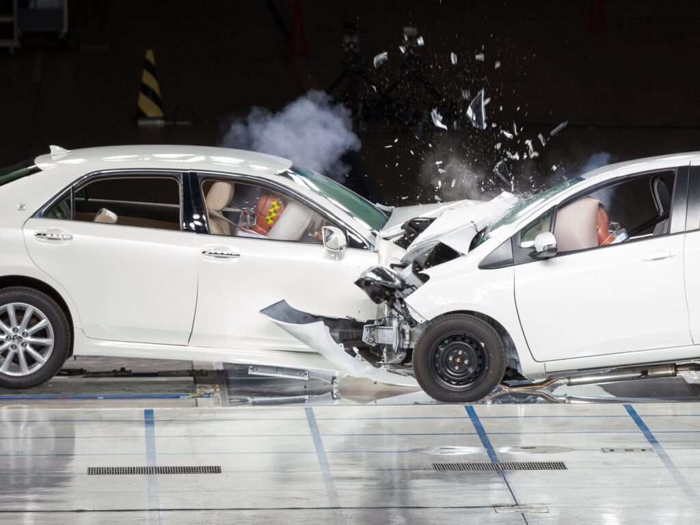
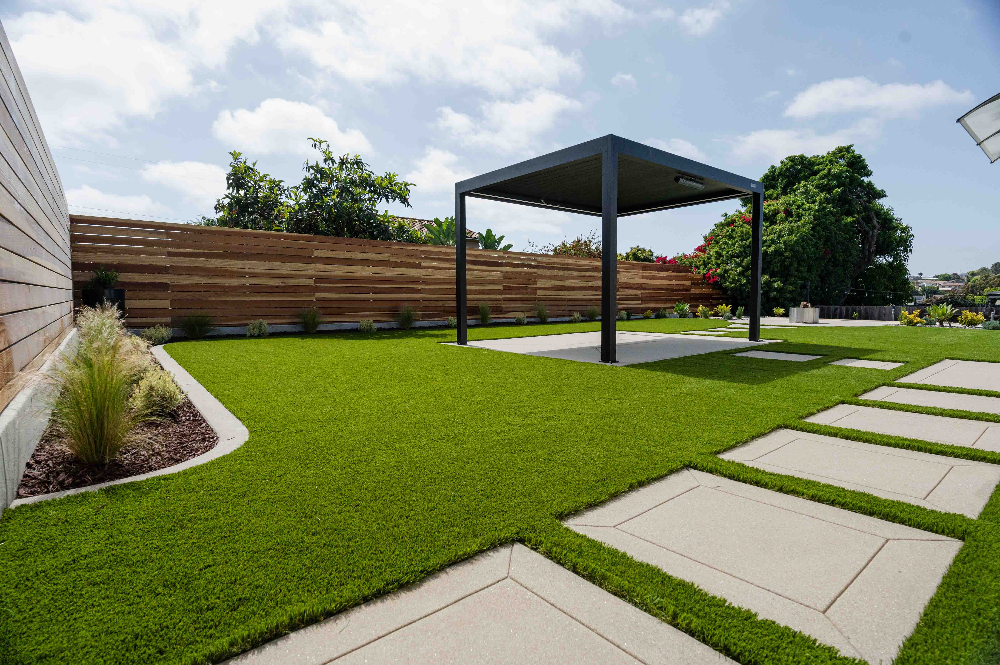
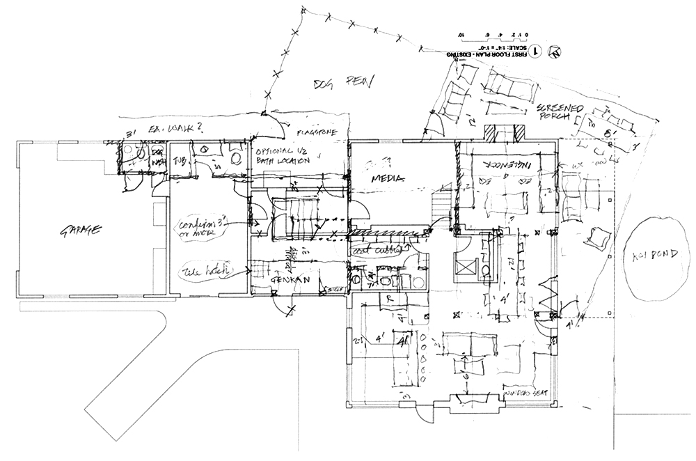

Berkeley Formula SAE
CurrentVehicle Dynamics Technical Member
Supports vehicle testing, data analysis, and design validation with a focus on suspension geometry, kinematics, tire modeling, and performance development.

Resume highlights
A short look at the roles that shape my career.
Vehicle Dynamics Technical Member
Supports vehicle testing, data analysis, and design validation with a focus on suspension geometry, kinematics, tire modeling, and performance development.
Automotive Forensics Intern
Supported accident reconstruction through vehicle and scene photography, 3D scanning, forensic mapping, data analysis, and human-factors documentation.

Founder, Photographer & Drone Pilot
FOUNDED AND RUN A MULTIMEDIA PRODUCTION BUSINESS FOCUSED ON REAL ESTATE AND COMMERCIAL WORK. I HANDLE ALL BUSINESS ADMIN, MARKETING, AND EDITING. ON MY OWN.

Draftsman / Architectural Intern
Translated hand sketches into 3D CAD models and architectural drawings while supporting client meetings and project coordination.

Fabrication Technician & Apprentice
APPRENTICED UNDER A PREMIER FAMILY RUN CLASSIC AUTOMOTIVE SHOP THAT SPECIALIZED IN HIGH END AUTOMOTIVE RESTORATION AND EXTREME MODIFICATION. WITH MANY BUILDS EXCEEDING 500K+ BUDGETS, I HONED MY SKILLS IN CUSTOM FABRICATION AND ATTENTION TO THE SMALL DETAIL.

Personal Restoration Project
A long-form restoration that combines body prep, sheet-metal work, detailing, and mechanical troubleshooting while preserving the car's character.